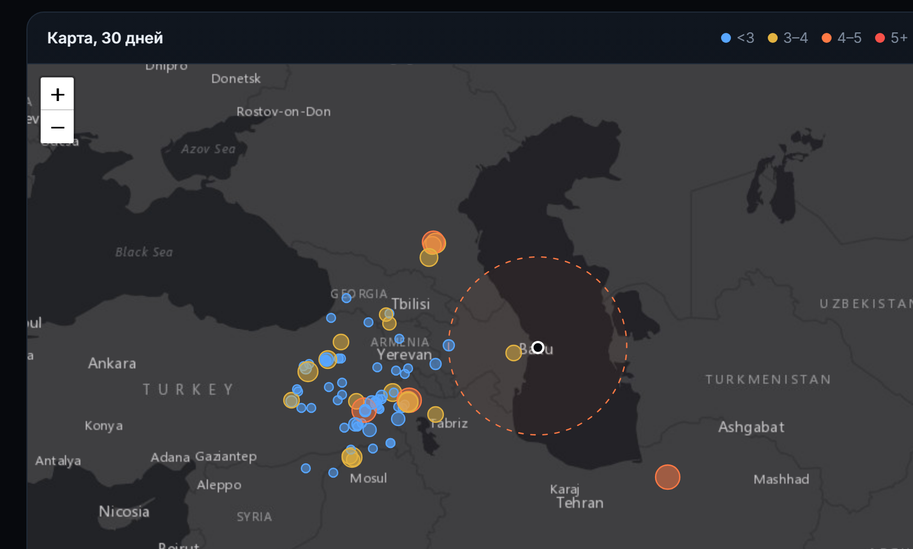
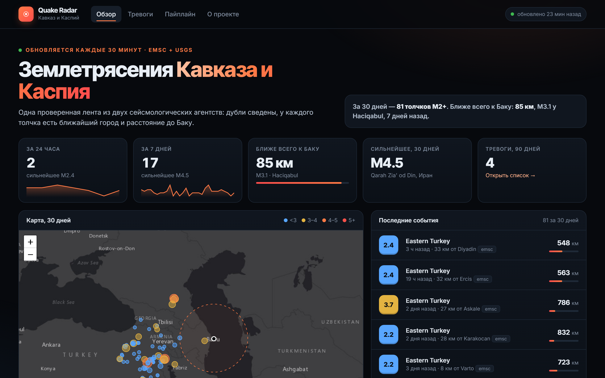
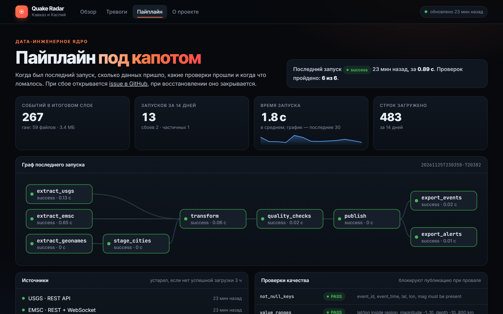
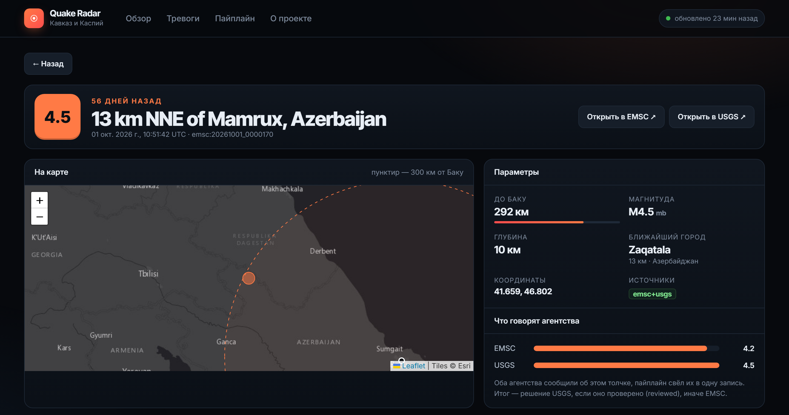

Землетрясения Кавказа и Каспия в одной проверенной ленте: два агентства, сведение дублей, контроль качества и сайт с тревогами.

столько обычно ждать новостей. И пишут только о сильных толчках.
EMSC и USGS дают разные цифры по одному событию. Кому верить — непонятно.
Сайты агентств не говорят главного: сколько километров до дома.
Пользователь: семьи и друзья команды в Баку. Решение: одна проверенная лента с расстоянием до дома и тревогами, которая обновляется сама.

Обзор. Карта, лента событий, расстояние до Баку, активность по дням.
Тревоги. M3.5+ в 300 км от Баку или M5+ в регионе; свежая тревога — баннер на всех страницах.
Карточка события. Обе магнитуды и ссылки на EMSC и USGS.
Пайплайн. Мониторинг ядра: запуски, проверки, свежесть.
Регион с M2, каждые 30 мин по updatedafter плюс WebSocket в реальном времени
"unid": "20261125_0000062" "time": "2026-11-25T04:04:55Z" "mag": 2.4, "magtype": "ml" "flynn_region": "EASTERN TURKEY"
Проверенные (reviewed) решения для событий от ~M4, каждые 30 мин
"id": "us6000ucp5" "mag": 4.5, "magType": "mb" "status": "reviewed" "coordinates": [44.76, 38.77, 10]
cities15000.zip, 3,3 МБ, раз в 30 дней. В регионе 863 города
# TSV 587084 Baku lat 40.378 lon 49.892 country AZ pop 2 351 300
Каждый ответ сохраняется как есть в сырой слой, с контрольной суммой sha256 и параметрами запроса.
EMSC, USGS, GeoNames. Повторы, таймауты, optional-задачи
gzip-JSON как есть, sha256. Никогда не меняется
DuckDB SQL: upsert, сведение EMSC↔USGS, ближайший город
6 проверок. Провал — публикации нет
final → serve JSON → сайт на Vercel, тревоги, health
GitHub Actions
cron каждые 30 мин и ручной запуск с параметрами для демо
Ветка git data
хранилище всех слоёв; история коммитов = версии данных
Свой DAG, 83 строки
явные зависимости, журнал каждой задачи в runs.jsonl
raw/<src>/dt=…/*.json.gz3,4 МБevent_id PK, emsc:… / usgs:… event_time lat · lon · depth_km mag · mag_type · place · event_type sources emsc | usgs | emsc+usgs mag_emsc · mag_usgs emsc_id · usgs_id · preferred_source nearest_city · country_code dist_home_km · nearest_city_km
Партиции по месяцам: инкрементальный запуск переписывает только затронутые месяцы.
Кандидаты: Δt ≤ 60 с и расстояние ≤ 100 км (гаверсинус прямо в SQL)
Лучшая пара один-к-одному — две оконные функции, вес Δt + км/10
Проверенное решение USGS побеждает, иначе EMSC; обе магнитуды сохраняются
Сведены 7 из 7 событий USGS. Средняя разница магнитуд — 0,13, максимум — 0,3.
updatedafter = max(updated) − 6 ч. Двигается сразу после записи в raw.
Последний обработанный raw-файл. Двигается только после публикации.
Повторный запуск и повторный backfill за 87 дней: 266 → 266, дублей 0.
not_null_keysid, время, координаты, Mvalue_rangesрегион, M −1…10, глубинаunique_event_idодна строка на событиеno_future_eventsне позже now + 10 минdaily_volume≤ 10 × медиана в деньenrichment_completeу каждого события есть город$ python -m quake run --inject-bad # подмешана запись: mag = 42, lat = 999 success transform failed quality_checks blocked: value_ranges skipped publish skipped export_events skipped export_alerts run FAILED · сайт не изменился
Трансформация пишет в _candidate/. Публикация — только после 6 зелёных проверок. Битые записи без id уходят в карантин.
Данные EMSC всё равно публикуются. Watermark USGS стоит, и следующий запуск сам догружает пропуск.
Кандидат удаляется, raw остаётся. Открывается issue в GitHub с меткой pipeline-alert.
Первый успешный запуск закрывает issue с комментарием. Без спама каждые 30 минут.
Смена схемы источника: пропавшие поля ловит not_null_keys, битые записи уходят в карантин, после правки парсера quake rebuild пересобирает всё из raw.

runs.jsonl — статус и время каждой задачи, строки и байты, проверки
health.json пишется даже после сбоя
Источник устарел, если не было успешной загрузки 3 часа
Сбой → issue в GitHub и баннер на сайте

проверок на каждой загрузке; намеренный провал блокирует публикацию
логики преобразований; запускаются в CI перед каждым прогоном
от сырого слоя до итоговой таблицы
| Выбрали | Почему | А не… |
|---|---|---|
| DuckDB + Parquet | SQL и оконные функции в одном процессе | PostgreSQL — постоянный сервер ради 2-секундного запуска |
| Свой DAG, 83 строки | явные зависимости; каждую строку можно объяснить | Airflow / Prefect — тяжёлый сервер ради 9 задач |
| GitHub Actions | бесплатно, логи, ручной запуск с параметрами | Vercel Cron — на бесплатном плане раз в сутки |
Ветка git data | понятные файлы, история = версии данных | облачная БД — отдельный аккаунт и секреты |
| Vercel, статика | сайт без бэкенда, деплой на каждый push | свой сервер — лишняя движущаяся часть |
Actions → Run workflow. Через ~20 с зелёный, новый коммит в data.
«данные обновлены только что», новые строки на странице «Пайплайн».
inject_bad = true → failed, сайт не изменился, открылся issue.
Повторный запуск: событий столько же.
command = backfill за прошлый месяц.
break_source = usgs → partial, затем success, issue закрыт.
Решено пространственно-временным окном и парой один-к-одному.
Перекрытие 6 часов и upsert последней ревизии.
Кандидатная область и два раздельных указателя.
Новым репозиториям запуски по расписанию часто пропускают. План: внешний планировщик или VPS.
Пара 23:59:50 / 00:00:10 не сводится.
~1–2 МБ в день; дальше — объектное хранилище.
Компромиссы в дизайне, смена схемы источника, самое слабое место, любая цифра.